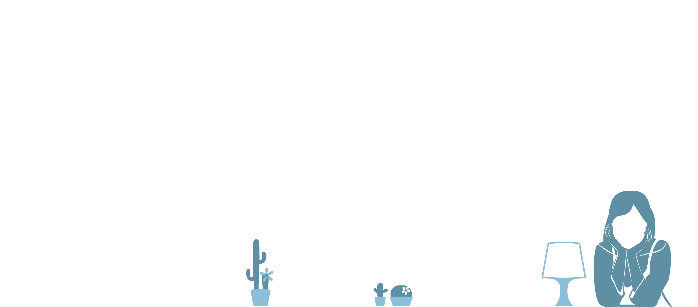
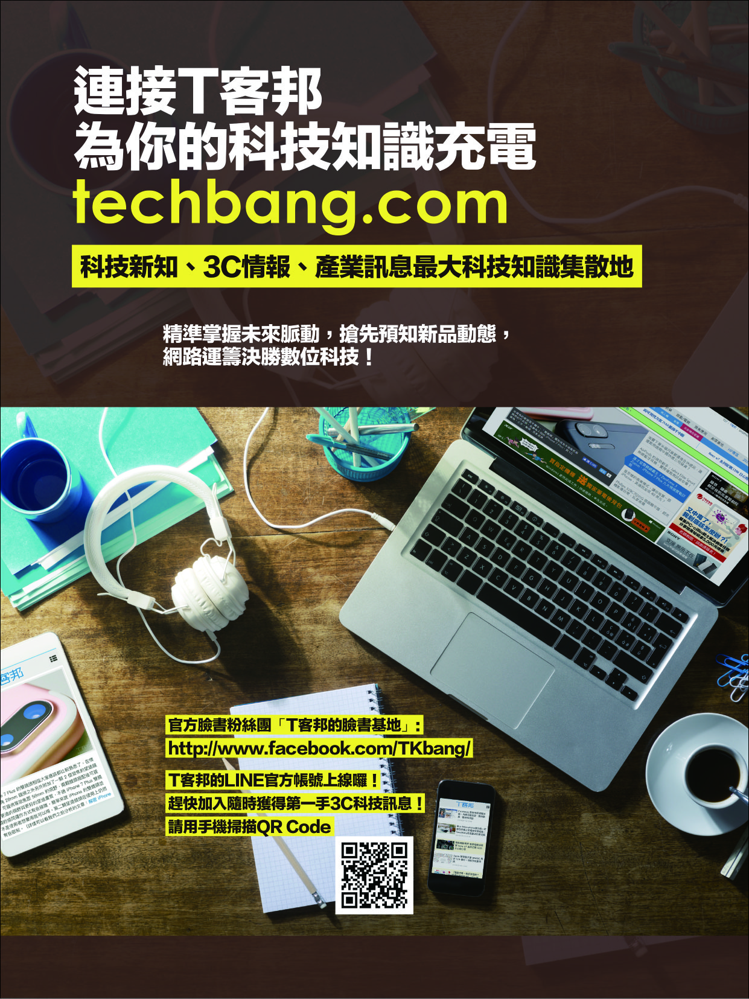
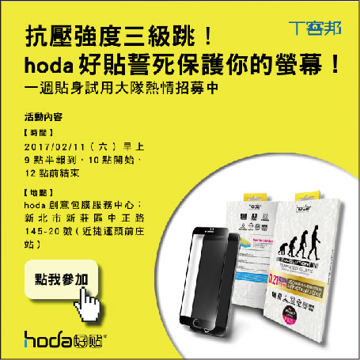

雜誌排版設計

EDM設計

雜誌排版設計
EDM設計


雜誌社提供我內文及一張圖片作為背景圖，為了使背景豐富，我將圖片放滿版，在壓上一層半透明的咖啡色底色，會選擇咖啡色作為底色，是要配合圖片桌子的顏色，最前面再放原圖。字體的顏色都是以亮色為主，因為要放在咖啡色的背景上，所以必須有一個明顯的對比，讓觀看者一目瞭然，最近流行在文字後方加上一層方塊，讓文字看起來有種對話框的感覺，下面粉絲團的內文壓在白色筆記本上，才不會蓋過旁邊電子用品上呈現公司網站的畫面。
整體底色使用活潑的黃色，字體則是黑色，黃色與黑色呈現對比，可以抓住觀看者的目光，為了使產品可以跟背景及內文有所區隔，我選擇在產品下面放上圓形，我認為圓形完整呈現在底圖上會略顯單調，所以把產品及圓形放置超出左下角一點，字體的粗細則是看內文，重要的標題及內文加粗，讓觀看者可以一目瞭然。